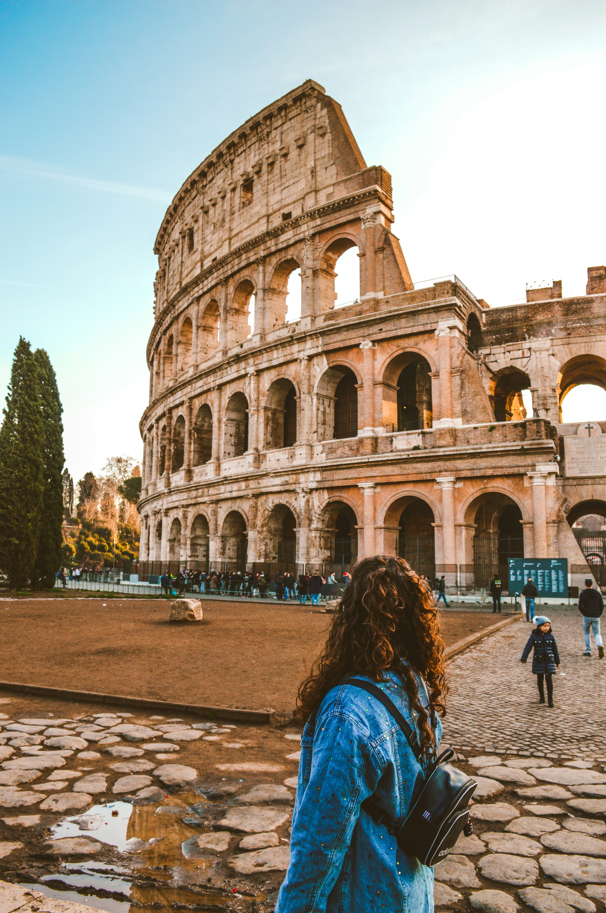

Featured Destination
Paris, France
Known as the "City of Lights", Paris is famed for its art, culture, and cuisine.
- Eiffel Tower & Seine River cruises
- Café culture and French cuisine
- Romantic atmosphere and fashion capital

Other Destinations

Palawan, Philippines
- Underground River (UNESCO World Heritage Site)
- El Nido’s limestone cliffs and lagoons
- White-sand beaches and island hopping
- Snorkeling and diving in clear waters

Kyoto, Japan
- Golden Pavilion (Kinkaku-ji)
- Fushimi Inari Shrine (thousands of red torii gates)
- Arashiyama Bamboo Forest
- Traditional tea houses and geisha districts

Rome, Italy
- Colosseum and Roman Forum
- Vatican City and St. Peter's Basilica
- Trevi Fountain and Spanish Steps
- Authentic Italian cuisine and gelato

Bali, Indonesia
- Ubud's rice terraces and temples
- Tanah Lot & Uluwatu sea temples
- Surfing and beach resorts
- Rich arts, dance, and vibrant nightlife